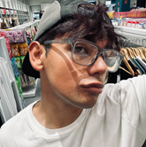

Juan Jaron de Oliveira Moreira | WDD 130

Olá! Meu nome é Juan. Sou professor e estudante de Desenvolvimento de Software. Gosto de aprender programação, melhorar minhas habilidades em inglês e meu objetivo é trabalhar remotamente para empresas internacionais no futuro.